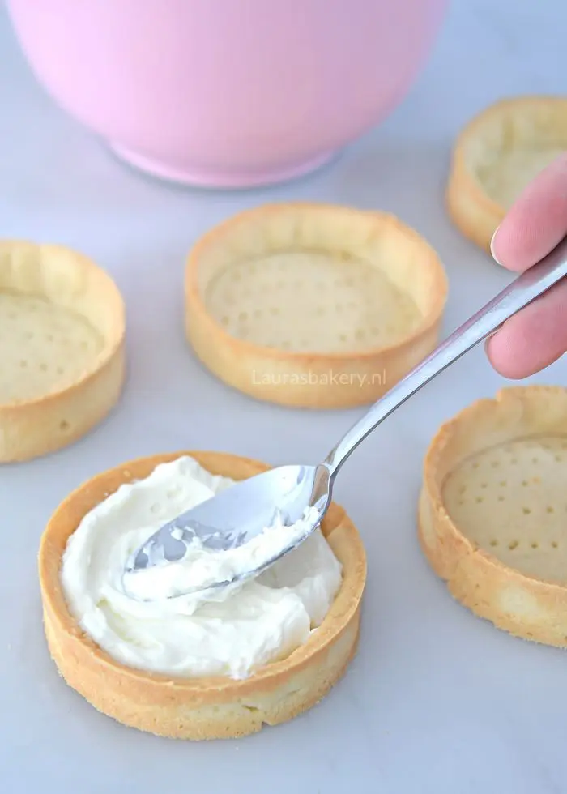

Tartelette basisdeeg

Ingrediënten
- 200 gram bloem
- 30 gram amandelmeel
- 80 gram poedersuiker
- 120 gram roomboter
- 30 gram losgeklopt ei
- snufje zout
Bereiding
- Doe de bloem, amandelmeel, poedersuiker, zout en boter in een kom. Mix tot een kruimelig deeg.
- Voeg het ei toe en kneed tot een mooi soepel deeg. Verpak het in folie en laat minstens een half uur rusten in de koelkast.
-
Bestuif je werkblad met bloem en rol het deeg uit tot 4-5 mm dikte. Neem een uitsteker die een paar cm groter is dan je bakringen. Steek een lapje deeg uit en bekleed je bakring hiermee. Snij de overtollige randjes weg en plaats de ring met
het deeg op een met bakpapier beklede bakplaat. Prik gaatjes in de bodem.
- Bak de tartelettes in 12-15 minuten op 170°C (boven- en onderwarmte).